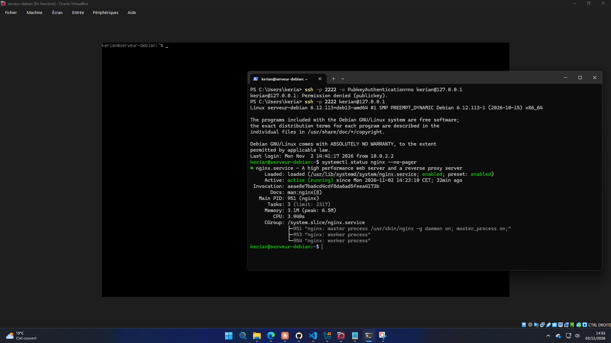
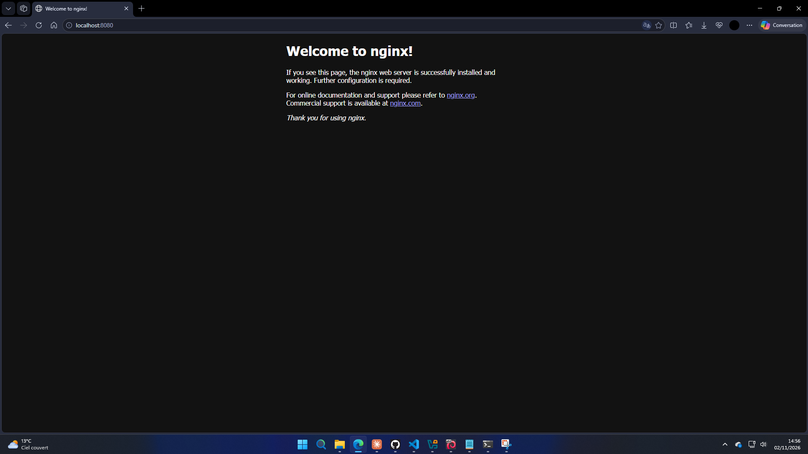
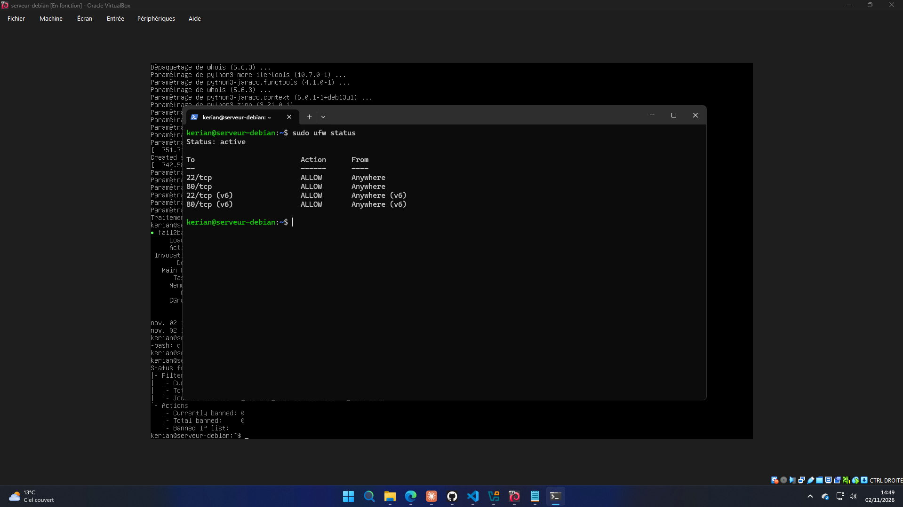
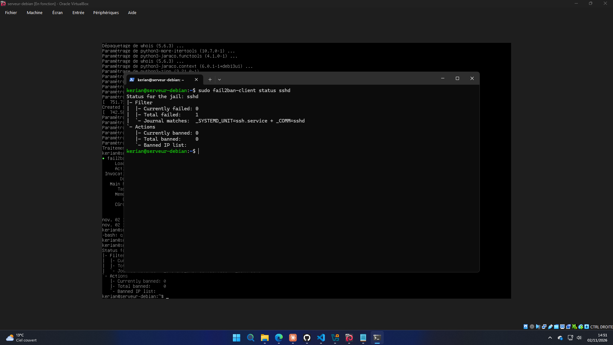
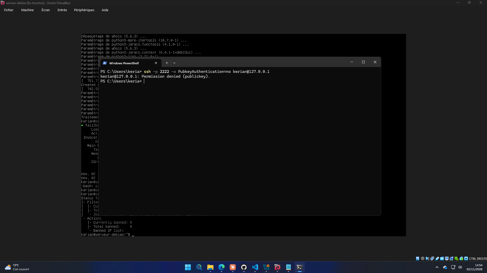
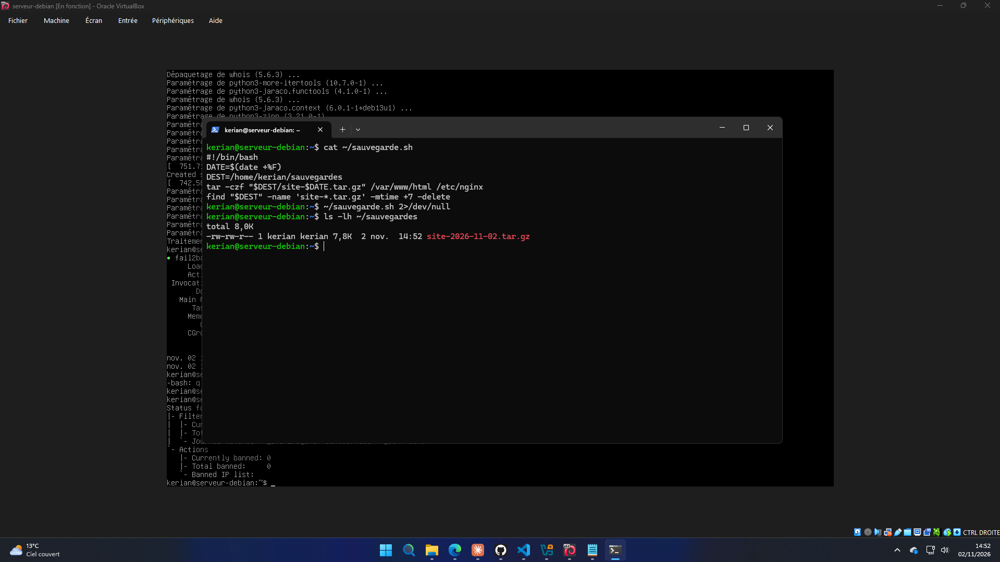
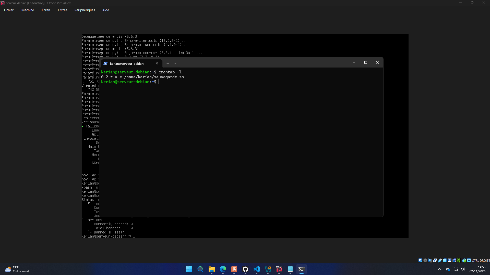

Serveur Linux sécurisé
Installation et sécurisation d'un serveur web Debian sur une machine virtuelle.

Objectif
Mettre en place un serveur web Linux complet, de l'installation à la sécurisation, comme on le ferait pour un client : seuls les services utiles sont accessibles, les attaques sont bloquées et les données sont sauvegardées automatiquement.
1. Installation de Debian en mode serveur
J'ai créé une machine virtuelle sous VirtualBox (2 Go de mémoire, 2 processeurs, 20 Go de disque) et installé Debian 13 sans interface graphique, avec seulement le serveur SSH et les utilitaires système, pour garder un système léger.
2. Serveur web nginx
J'ai installé nginx avec sudo apt install nginx, puis ajouté une redirection de port dans VirtualBox pour afficher la page du serveur depuis Windows.

3. Pare-feu UFW
Le pare-feu bloque tout sauf le SSH (port 22) pour l'administration et le web (port 80).

4. Protection contre les attaques : fail2ban
Fail2ban surveille les connexions SSH et bannit automatiquement les adresses qui multiplient les échecs d'authentification.

5. Connexion SSH par clé
J'ai créé une clé ed25519, désactivé l'authentification par mot de passe et interdit la connexion en root. Un essai avec mot de passe est maintenant refusé.

6. Sauvegarde automatique
Un script archive le site et la configuration nginx. Il est lancé chaque nuit à 2 h par cron, et il garde les 7 dernières sauvegardes.


Ce que j'ai appris
Administrer un serveur Linux en ligne de commande, appliquer le principe du moindre privilège (peu de ports ouverts, pas de root, pas de mot de passe SSH) et automatiser des tâches de maintenance.